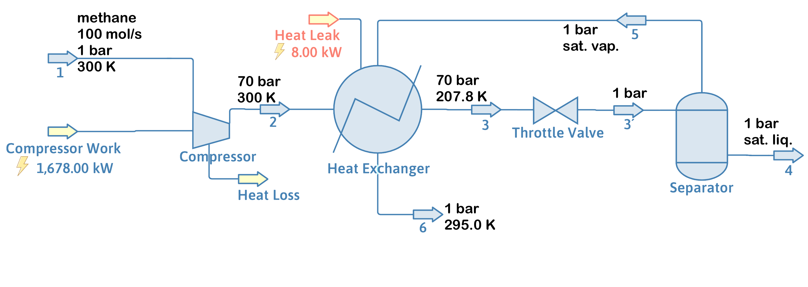
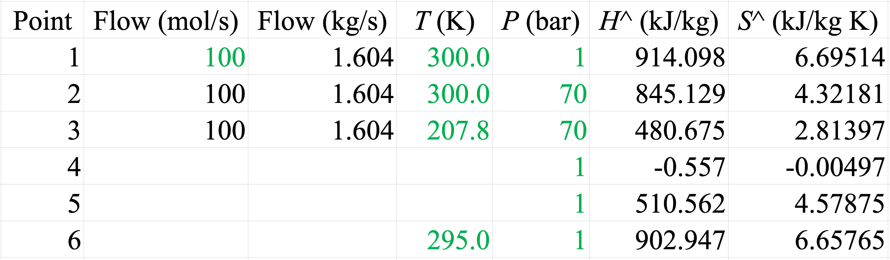
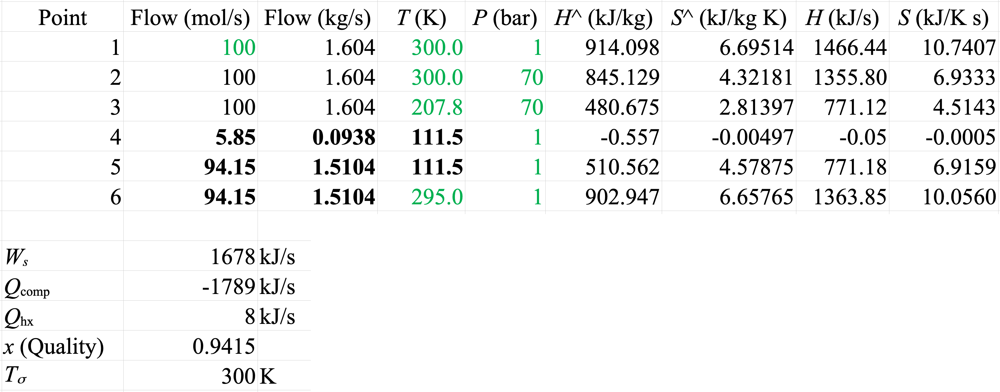
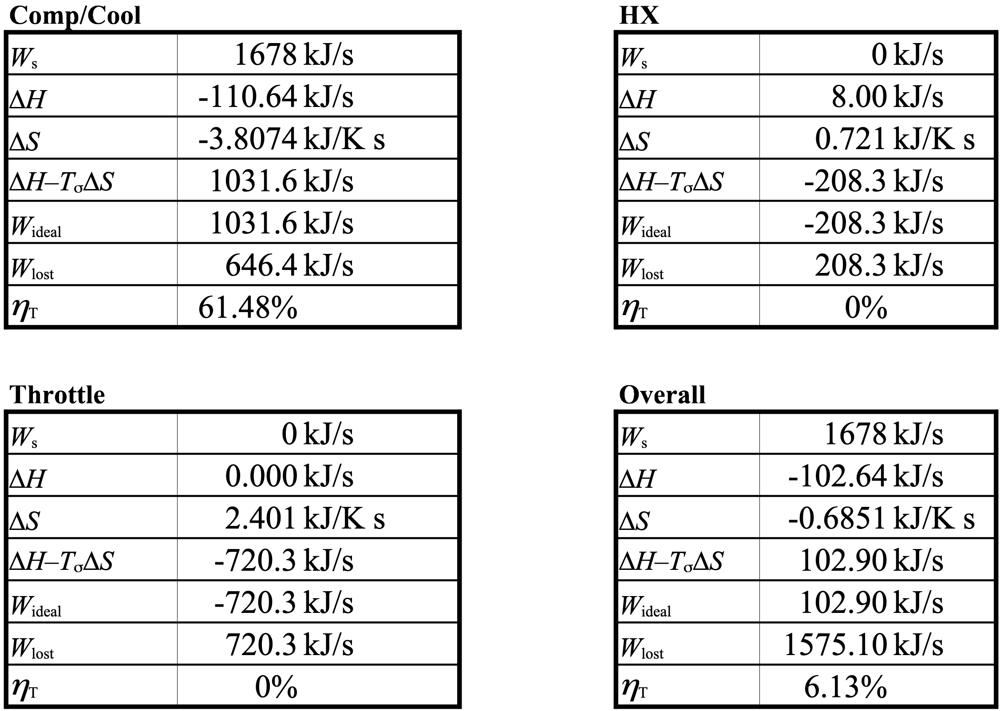
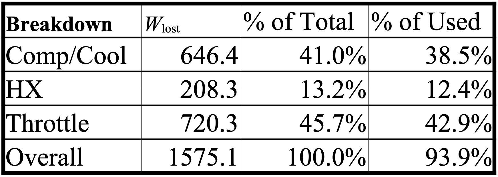

The Law is a Thief: It Destroys Exergy and Laughs in Your Face Part 2
DOFPro Team

Between the time the narrator finished recording the narration and the final editing of the video, we came across the CoolProp property package in DWSIM. Its main purpose is to provide accurate calculation of vapor and liquid properties in cryogenic cycles. The narration states that we used the Peng-Robinson EoS in the calculations. We were unable to re-record the narration, but we were able to rerun the calculations using CoolProp. The displayed values are the CoolProp values, but they do not agree with the narration. We point out visually whenever we had to make these corrections.
Introduction
- Part 1
- Explained how to calculate the thermodynamic efficiency
- From the maximum possible work produced
- Or from the minimum possible work requred
- Called a Second Law analysis
- Explained how to calculate the thermodynamic efficiency
- Part 2, we’ll work an example after reviewing the Combined 1st and 2nd laws.
The Combined 1st and 2nd Law
Open Steady-State System
\(\dot{W}_{\text{ideal}} = - \sum \left(1 - \dfrac{T_\sigma}{T_i}\right) \dot{Q}_i + (\Delta \dot{H} + \Delta \dot{E}_k + \Delta \dot{E}_p - T_\sigma \Delta \dot{S})_\mathrm{fs}\)
On a mass basis
\(\dot{W}_{\text{ideal}} = - \sum \left(1 - \dfrac{T_\sigma}{T_i}\right) \dot{Q}_i + \sum\limits_{\text{out}} \dot{m}_i (\hat{H} + \hat{E}_k + \hat{E}_p - T_\sigma \hat{S}) - \sum\limits_{\text{in}} \dot{m}_i (\hat{H} + \hat{E}_k + \hat{E}_p - T_\sigma \hat{S})\)
On a mole basis
\(\dot{W}_{\text{ideal}} = - \sum \left(1 - \dfrac{T_\sigma}{T_i}\right) \dot{Q}_i + \sum\limits_{\text{out}} \dot{n}_i (\hat{H} + \hat{E}_k + \hat{E}_p - T_\sigma \hat{S}) - \sum\limits_{\text{in}} \dot{n}_i (\hat{H} + \hat{E}_k + \hat{E}_p - T_\sigma \hat{S})\)
Steps
- Solve the original problem. Determine all needed flows, enthalpies, entropies, temperatures, heat flows and work flows.
- Create a table with the information in Step 1. Then for each process or unit operation in the system:
- Solve for the ideal work, \(\dot{W}_\mathrm{ideal}\)
- Solve for the lost work, \(\dot{W}_\mathrm{lost}\)
- Solve for the thermodynamic efficiency, \(\eta_t\)
- Determine which parts of the process contribute the most to the lost work.
Example

100 moles per second of methane at 300 K and one bar enters the system in Stream 1. It is then compressed and cooled in a multistage compressor with inter- and aftercooling. The unspecified heat from the cooling is rejected to the ambient at \(T_\sigma\) of 300 K. The compressor has a work input of 1678 kilojoules per second or 1678 kilowatts. The methane exits the compressor at 300 K and 70 bar.
The compressed methane then passes through a heat exchanger and exchanges heat with the non-liquified methane from the throttle valve. The compressed methane exits the heat exchanger at 207.8 K and 70 bar. The heat exchanger has a leak of 8 kilojoules per second or 8 kilowatts of heat entering from the ambient at 300 K.
The compressed and cooled methane enters a throttle valve and separator, where it is expanded to one bar and the liquified methane is separated from the still-gaseous methane and sold as LNG or liquified natural gas. The exiting temperature and flow rates have not been specified, but the exiting liquid is in equilibrium with the exiting vapor.
Step 1 – Solve the Mole and Energy Balance
Calculations are done with the CoolProp property package, not Peng-Robinson.

Step 1 (cont.)
Calculations are done with the CoolProp property package, not Peng-Robinson.
Compressor/Cooler
\(\Delta \dot{H} = \dot{Q} + \dot{W}_s\)
\(\dot{Q} = \Delta \dot{H} - \dot{W}_s = \dot{H}_2 - \dot{H}_1 - \dot{W}_s\) \(\ \ \ = 1355.80 - 1466.44 - 1678 = -1789\ \mathrm{kW}\)
Step 1 (cont.)
Calculations are done with the CoolProp property package, not Peng-Robinson.
HX/Valve/Separator
\(\Delta \dot{H} = \dot{Q}\)
\(\dot{H}_4 + \dot{H}_6 - \dot{H}_2 = \dot{Q}\)
\(\dot{m}[(1-x)\hat{H}_4 + x\hat{H}_6 - \hat{H}_2] = \dot{Q}\)
Step 1 (cont.)
\(\hat{H}_4 - \hat{H}_2 +x(\hat{H}_6 - \hat{H}_4) = \frac{\dot{Q}}{\dot{m}}\)
\(x = \dfrac{\frac{\dot{Q}}{\dot{m}} + \hat{H}_2 - \hat{H}_4}{\hat{H}_6 - \hat{H}_4}\)
\(\ \ = \dfrac{\frac{8}{1.604}+845.129-(-0.557)}{902.947-(-0.557)} = 0.9415\)
\(\dot{n}_6 = x \dot{n}_3 = 94.15\ \mathrm{\frac{mol}{s}},\ \ \ \ \ \ \ \ \ \ \ \ \dot{m}_6 = 1.5104\ \mathrm{\frac{kg}{s}}\)
\(\dot{n}_4 = (1 - x) \dot{n}_3 = 5.85\ \mathrm{\frac{mol}{s}},\ \ \ \ \dot{m}_4 = 0.0938\ \mathrm{\frac{kg}{s}}\)
Step 2 – Create Flows and Properties Table
Calculations are done with the CoolProp property package, not Peng-Robinson.

Steps 3, 4, 5 – Calculate \(\dot{W}_{\text{ideal}}\ \), \(\dot{W}_{\text{lost}}\ \), and \(\eta_t\)
\(\dot{W}_{\text{ideal}} = \Delta \dot{H} - T_\sigma \Delta \dot{S} - \sum \left(1 - \dfrac{T_\sigma}{T_i}\right) \dot{Q}_i\)
\(\dot{W}_{\text{ideal}} = \Delta \dot{H} - T_\sigma \Delta \dot{S}\)
\(\dot{W}_{\text{lost}} = \dot{W}_s - \dot{W}_{\text{ideal}}\)
\(\eta_t = \frac{\dot{W}_\mathrm{ideal}}{\dot{W}_{s}}\) for processes that require work.
\(\eta_t = \frac{\dot{W}_{s}}{\dot{W}_\mathrm{ideal}}\) for processes that produce work.
Step 3,4,5 (cont.)

Calculations are done with the CoolProp property package, not Peng-Robinson.
Step 6 – Determine contributions to \(\dot{W}_{\text{lost}}\)

The Takeaways
- The first step in using the combined First and Second Law is to fully solve the problem with flows, enthalpies, and entropies.
- The most common version of the combined law is for open steady-state systems.
- You will only have to use the heat term if you have a heat reservoir either above or below the ambient. Heat transfer with the ambient doesn’t count for the combined law.
- The combined First and Second Law helps identify which parts of a process contribute most to lost work or inefficiency, but it doesn’t tell you how to fix the issues.
Thanks for watching!
The previous video in the series is in the link in the upper left. The next video in the series is in the upper right. To learn more about Chemical and Thermal Processes, visit the website linked in the description.
The DOFPro Team